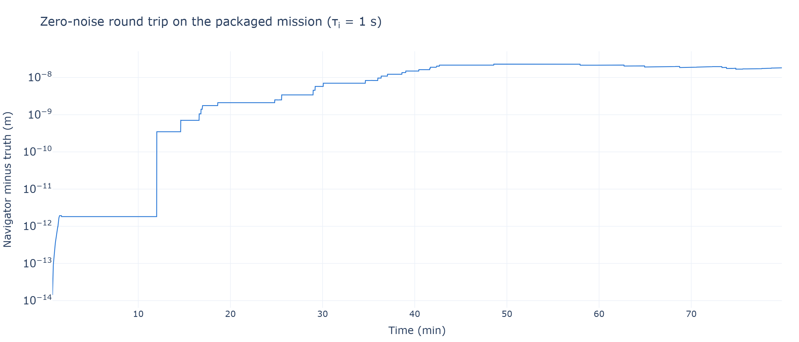

Strapdown mechanization¶
The mechanization is the navigator itself: the equations that turn the gyro and accelerometer outputs back into attitude, velocity and position. It integrates the measured angular rate into attitude. It uses that attitude to resolve the measured specific force along North, East and Down, adds gravity back, and removes the apparent forces of the rotating Earth. It then integrates the result twice, into velocity and position. Every sensor error passes through these equations, and the INS error model follows from them. ins_sim implements the local-navigation-frame form of Groves1.
Key results
- Each step performs four updates (attitude, specific-force resolution, velocity, position) after re-evaluating Earth rate, transport rate, gravity and the radii of curvature at the current state.
- The attitude update applies the exact rotation-vector exponential of the body's rate relative to NED.
- The velocity and position updates are first-order (forward Euler), on purpose: the truth generator inverts exactly these steps.
- There are no coning or sculling corrections. The truth's piecewise-constant IMU outputs leave them nothing to correct.
Physical picture¶
flowchart LR
G["Gyros<br/>ω̃<sub>ib</sub><sup>b</sup>"] --> ATT["Attitude update<br/>C<sub>b</sub><sup>n</sup>"]
A["Accelerometers<br/>f̃<sub>ib</sub><sup>b</sup>"] --> RES["Resolve in NED<br/>f<sub>ib</sub><sup>n</sup> = C<sub>b</sub><sup>n</sup> f̃<sub>ib</sub><sup>b</sup>"]
ATT --> RES
RES --> VEL["Velocity update<br/>+ gravity, − Coriolis"]
VEL --> POS["Position update<br/>L<sub>b</sub>, λ<sub>b</sub>, h<sub>b</sub>"]
EARTH(["Earth model<br/>ω<sub>ie</sub><sup>n</sup>, ω<sub>en</sub><sup>n</sup>, g, R<sub>N</sub>, R<sub>E</sub>"])
POS -.-> EARTH
VEL -.-> EARTH
EARTH -.-> ATT
EARTH -.-> VELThe sensors are strapped to the vehicle, so they measure along the body axes. The navigator keeps track of the attitude and uses it to resolve each specific-force measurement in NED. What it measures is not acceleration, though. Specific force excludes gravity, which the navigator must add from its gravity model. It also includes the apparent accelerations of a rotating, curved frame, which the navigator must remove: the Coriolis term, and the transport term that keeps a vehicle following the curved Earth. The Earth model needs the current position and velocity, so every update feeds the next.
Continuous-time model¶
In the local navigation frame, the navigation equations are:
where:
- \(\Cmat{b}{n}\) is the attitude, and \(\vvec{eb}{n} = (v_N, v_E, v_D)\) the velocity relative to the Earth, resolved in NED [m/s];
- \(\Wmat{ib}{b}\) and \(\fvec{ib}{b}\) hold the gyro and accelerometer outputs [rad/s, m/s²];
- \(\Wmat{ie}{n}\) and \(\Wmat{en}{n}\) are the skew-symmetric matrices of Earth rate and transport rate [rad/s];
- \(\gvec{b}{n}\) is gravity [m/s²], and \(L_b\), \(\lambda_b\), \(h_b\), \(R_N\), \(R_E\) are as on Earth & gravity.
The attitude equation is explained on Frames & attitude. In the velocity equation, \(2\Wmat{ie}{n}\vvec{eb}{n}\) is the Coriolis acceleration of a body moving over the rotating Earth, and \(\Wmat{en}{n}\vvec{eb}{n}\) the acceleration needed to follow the Earth's curvature. A vehicle at rest senses only the Earth's rotation and the reaction to gravity, and every derivative is then zero.
As implemented¶
Each step takes the state at sample \(k\) to sample \(k+1\), one IMU interval \(\tau_i\) later. A tilde marks the sensor outputs; every other quantity is the navigator's own.
1. Frame rates and gravity at the current state:
# --- 1. Local rotating-Earth quantities at step k --------------
omega_ie_n = earth_rate_n(L_b[k])
omega_en_n = transport_rate_n(v_eb_n[k], L_b[k], h_b[k])
omega_in_n = omega_ie_n + omega_en_n # nav-frame rate
g_b_n[2] = normal_gravity(L_b[k], h_b[k])
2. Body rate relative to NED. Remove the NED frame's own rotation, resolved in body axes, from what the gyros measured:
# --- 2. Body rate relative to the nav frame ------------------
# The gyro saw omega_ib^b. Subtract the nav frame's own rotation
# (resolved in body axes) to get what drives the b→n attitude update.
C_n_b = C_b_n.inv()
omega_nb_b = meas_omega_ib_b[k] - C_n_b.apply(omega_in_n)
3. Attitude update. Rotate the attitude by the body's rotation over the step, as an exact rotation vector:
This is the exact solution of the attitude equation when \(\wvec{nb}{b}\) is constant over the step.
# --- 3. Attitude update (exact rotation-vector exponential) ---
dC = Rot.from_rotvec(omega_nb_b * tau_i)
C_b_n_next = C_b_n * dC # right-mult: body increment
q_b_n[k+1] = C_b_n_next.as_quat() # pyright: ignore[reportCallIssue]
4. Specific force in NED, with the attitude at the start of the step:
# --- 4. Specific force in NED (forward Euler — consistent with
# the truth IMU, which uses the same first-order scheme) ---
f_ib_n = C_b_n.apply(meas_f_ib_b[k])
5. Velocity update, forward Euler. The code also holds the barometric damping terms, explained on Vertical channel:
# --- 5. Rotating-frame velocity update ------------------------
coriolis = np.cross(2.0 * omega_ie_n + omega_en_n, v_eb_n[k])
v_eb_n_dot = f_ib_n - coriolis + g_b_n
# Baro damping: the height residual corrects vertical velocity
# (K2) and updates the accel-error integrator (K3); a positive
# residual (INS high) commands positive Down velocity.
if meas_h_b is not None:
baro_residual = h_b[k] - meas_h_b[k]
v_eb_n_dot[2] += K2 * baro_residual + acc_corr
acc_corr += K3 * baro_residual * tau_i
v_eb_n[k+1] = v_eb_n[k] + v_eb_n_dot * tau_i
6. Position update, forward Euler, with the radii of curvature at the start of the step:
# --- 6. Curvilinear position (forward Euler — matches truth) --
R_N, R_E = wgs84_radii(L_b[k])
L_b[k+1] = L_b[k] + (v_eb_n[k][0] / (R_N + h_b[k])) * tau_i
lambda_b[k+1] = lambda_b[k] + (v_eb_n[k][1] /
((R_E + h_b[k]) * np.cos(L_b[k]))) * tau_i
h_b[k+1] = h_b[k] - v_eb_n[k][2] * tau_i
if meas_h_b is not None:
h_b[k+1] -= K1 * baro_residual * tau_i
Finally, the new position is also converted to metres from the start point, \(\rvec{lb}{l}\), for drawing tracks (see Frames & attitude).
Compared with Groves (2013)
This is Groves' local-navigation-frame mechanization1, with three deliberate differences:
- Attitude. Groves' basic attitude update is the first-order truncation \(\Cmat{b}{n}(\Ithree + \Wmat{ib}{b}\tau_i) - \Wmat{in}{n}\Cmat{b}{n}\tau_i\). ins_sim applies the exact exponential of the same rotation, which agrees with it to first order and keeps the attitude a pure rotation.
- Position. Groves averages the velocities at the start and end of the step; ins_sim uses the velocity at the start.
- No precision corrections. Groves' precision mechanization adds coning and sculling corrections and a mid-step attitude for resolving the specific force2. ins_sim does not.
The first-order choices keep the navigator the exact inverse of the truth generator.
What it looks like¶

The navigator, fed the ideal outputs of the packaged mission's truth, reproduces the truth to within \(2.3 \times 10^{-8}\) m over the whole 80 minutes. The difference is floating-point rounding, which accumulates in small steps. This is the zero-noise round trip of the Validation page. It proves that the navigator and the truth generator are consistent. It cannot show how accurately the navigator integrates continuous motion, because the truth is built from the navigator's own discrete steps.
The example below runs the navigator on a level IMU at rest at 45° N. With perfect sensors it stays exactly at rest: the gyros' Earth rate is removed by step 2, and the accelerometers' reaction to gravity is cancelled by step 5. A 0.01 °/h gyro bias moves it 1.3 km in an hour.
Assumptions & limitations¶
Assumptions & limitations
- First-order integration. The velocity and position updates are forward Euler, the specific force is resolved with the attitude at the start of each step, and there are no coning or sculling corrections. In a real INS, or against a truth that varies within each step, these would add errors in fast manoeuvres. In ins_sim they are invisible, because the truth inverts them exactly (see Truth trajectory & ideal IMU).
- Known start. Each run starts from the true position and velocity. Only the attitude starts in error, by the drawn alignment error; the alignment itself is not simulated.
- Vertical channel. Without a height reference the vertical channel diverges. By default a barometric loop holds it (see Vertical channel).
- No aiding. Apart from the barometer, nothing corrects the navigator: there is no GNSS or other measurement update.
- Not over the poles, where the NED frame is undefined.
In the code¶
| Quantity | Equation | Implemented in |
|---|---|---|
| The whole mechanization | Steps 1 to 6 | strapdown_navgrade |
| Initial state | \(L_b\), \(\lambda_b\), \(h_b\), \(\vvec{eb}{n}\), \(\qvec{b}{n}\) | NavState |
| Output history | Every state, plus \(\rvec{lb}{l}\) | NavSolution |
| Earth rate, transport rate, gravity, radii | Step 1 | earth_rate_n, transport_rate_n, normal_gravity, wgs84_radii |
This example runs the navigator for an hour on a level IMU at rest at 45° N, first with perfect sensors and then with a 0.01 °/h bias on the gyro that points East:
"""The navigator on a level IMU at rest at 45° N: perfect sensors, then a gyro bias."""
import numpy as np
from scipy.spatial.transform import Rotation
from ins_sim.core.earth_model import earth_rate_n, normal_gravity
from ins_sim.evaluation.errors import position_error
from ins_sim.navigation.strapdown import NavState, strapdown_navgrade
L_b, tau_i, M = np.deg2rad(45.0), 1.0, 3601 # one hour at 1 s
baro = np.zeros(M) # an ideal barometer: h_b = 0
# At rest, a perfect IMU senses Earth rate and the reaction to gravity.
omega_ib_b = np.tile(earth_rate_n(L_b), (M, 1))
f_ib_b = np.tile([0.0, 0.0, -normal_gravity(L_b, 0.0)], (M, 1))
start = NavState(L_b, 0.0, 0.0, np.zeros(3), Rotation.identity().as_quat())
nav = strapdown_navgrade(omega_ib_b, f_ib_b, start, tau_i, meas_h_b=baro)
print(f"Perfect sensors: largest speed in 1 h = {np.abs(nav.v_eb_n).max():.1f} m/s")
# The same, with a 0.01 °/h bias on the gyro that points East (body y).
b_g = np.deg2rad(0.01) / 3600.0
nav = strapdown_navgrade(omega_ib_b + [0.0, b_g, 0.0], f_ib_b, start, tau_i, meas_h_b=baro)
delta_r_eb_n = position_error(nav.L_b, nav.lambda_b, nav.h_b, L_b, 0.0, 0.0)
print(f"0.01 °/h gyro bias: horizontal error after 1 h = "
f"{np.hypot(*delta_r_eb_n[-1, :2]):.0f} m")
Perfect sensors: largest speed in 1 h = 0.0 m/s
0.01 °/h gyro bias: horizontal error after 1 h = 1346 m
The 1.3 km is close to the single-channel prediction for a gyro bias, \(R\,b_g\,(t - \sin\omega_s t/\omega_s)\) = 1.35 km after an hour (see INS error model).
References¶
-
Groves (2013), Chapter 5, for the inertial navigation equations in the local navigation frame, and their precision versions. ↩↩
-
Savage (1998a) and Savage (1998b) derive the coning and sculling algorithms. ↩